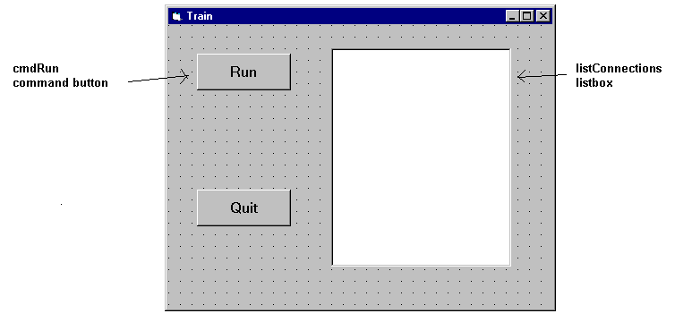

This example provides a Visual Basic user interface to the Prolog program finding train routes between two points.
The Visual Basic program train contains the following form window:

Clicking the cmdRun command button will display all the available
routes between Stockholm and Orebro. These are calculated as solutions
of the Prolog query places('Stockholm','Orebro',Way). For each
solution, the value assigned to the variable Way is retrieved
into the Visual Basic variable result and is inserted as a new
item into the listConnection listbox.
The Visual Basic program consists of four parts:
Private Sub cmdRun_Click()
Dim qid As Long
Dim result As String
Dim s As String
Dim rc As Integer
qid = -1 ' make it safe to PrologCloseQuery(qid) in Err:
'load the train.pl Prolog file
rc = PrologQueryCutFail("ensure_loaded(app(train))")
If rc < 1 Then
Msg = "ensure_loaded(train)"
GoTo Err
End If
'open the query
qid = PrologOpenQuery("places('Stockholm','Orebro',Way)")
If qid = -1 Then
rc = 0
Msg = "Open places/3"
GoTo Err
End If
'generate solutions
Do
rc = PrologNextSolution(qid)
If rc = 0 Then Exit Do ' failed
If rc < 0 Then
Msg = "places/3"
GoTo Err
End If
If PrologGetString(qid, "Way", result) < 1 Then
rc = 0
Msg = "PrologGetString Way"
GoTo Err
End If
listConnections.AddItem result
Loop While True
'after all solutions are found, the query is closed
Call PrologCloseQuery(qid)
Exit Sub
Note that each part does elaborate error checking and passes control to the error display instructions shown below:
Err:
Call PrologCloseQuery(qid) ' Always close opened queries
'error message is prepared, adding either the - failed - or
'the - raised exception - suffix to the Msg string specific
'to the function called
If rc = 0 Then
Msg = Msg + " failed"
Else
Call PrologGetException(s)
Msg = Msg + " raised exception: " + s
End If
MsgBox Msg, 48, "Error"
End Sub
The Prolog predicate places/3 is defined in the train.pl
file, as mentioned earlier.